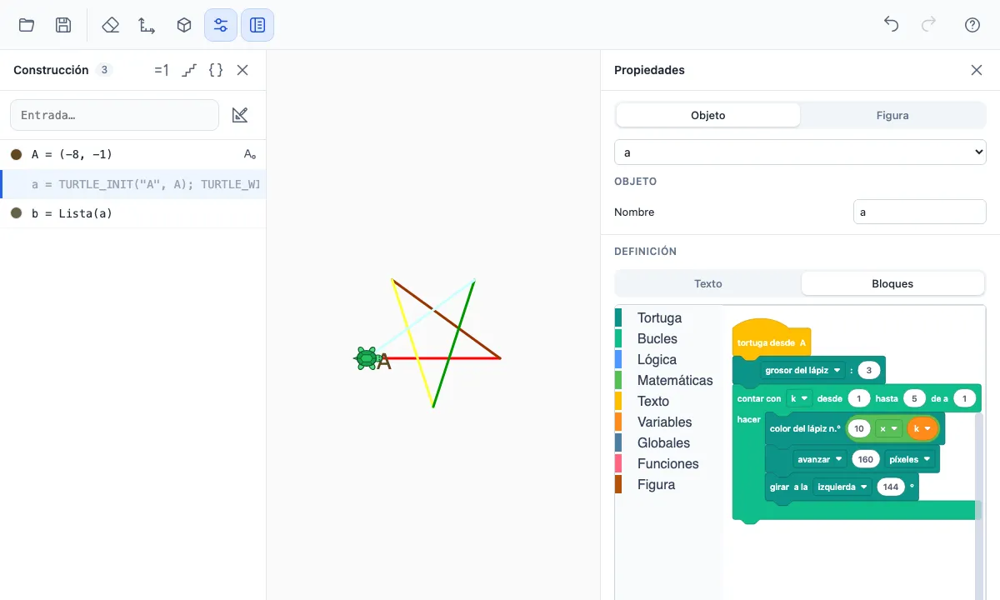
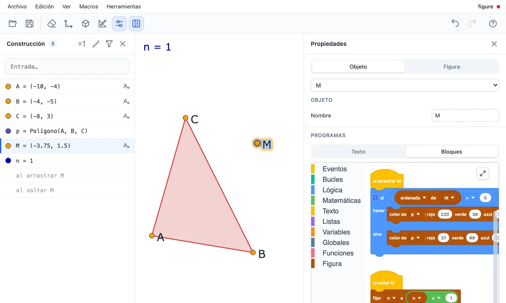
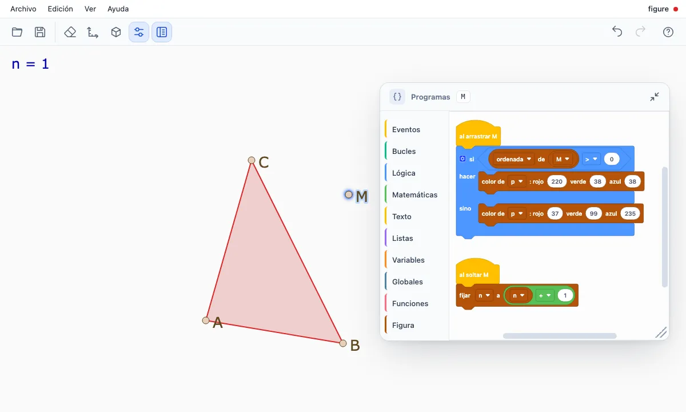

Expresiones y deslizadores
Expresiones
Toda línea que no es ni un punto ni un comando crea una expresión, mostrada arriba a la izquierda con dos decimales. Su tipo se deduce del texto:
| Línea | Tipo |
|---|---|
a = 3,
lista = [1, 2, 3]
|
constante |
t = "Hola" |
texto |
f = 0.5x^2 - 4 |
función de x (y, z, t); f(2) la
llama, f'(2) llama a su derivada
|
f(x) = ax^2 + bx + c |
curva de la función, trazada: ax se
lee a x, se crean los deslizadores a, b, c;
f(2) también la llama
|
f(x) = x^2, (-1 <= x <= 2)
|
curva trazada en un intervalo, escrito como en
GeoGebra (≤ o <=);
puede faltar una cota ((x >= 0)), y cada cota puede ser una fórmula ((0 <= x <= a))
|
E = d(A, B) |
medida, recalculada cuando la figura se mueve |
u = "AB = " + round(d(A, B)*100)/100
|
texto calculado |
En una fórmula, un punto vale sus coordenadas, un segmento su longitud, una circunferencia su radio, un polígono su área, un ángulo su medida. Sintaxis completa: Fórmulas y programas.
Una expresión se mueve arrastrando su texto; unida a un punto, lo sigue. Tocarla la selecciona, o escribe su nombre durante una entrada. Se coloca en pasos de 10 píxeles, lo que facilita las alineaciones.
Deslizadores
r = Deslizador(0, 5, 2): de 0 a 5, valor 2. Los
límites pueden ser expresiones o fórmulas (Deslizador(0, d(A, B), 1)). Incremento, longitud, orientación, tirador y animación se
ajustan en las
propiedades.
r = 5 lo vuelve a convertir en constante.
Seleccionado, también se anima
con el resorte.
Arrastrar el extremo de su barra la alarga o la acorta, en pasos de 20 píxeles.
Un nombre desconocido que empieza por minúscula crea un
deslizador de −5 a 5, de incremento 0,1 y valor 1:
A = (a, 4), d = y = m x + p. Una letra
griega crea un ángulo de 0 a 360°, de incremento 1° y valor 45°
(de 0 a 2π en radianes): P = (3; α). Una línea
rechazada no conserva sus deslizadores.
Puntos calculados
-
M = (x(B) + 1, y(A)): coordenadas dadas por fórmulas. -
N = Punto(2*B - A): fórmula cuyo valor es un punto. -
P = (3; 60°): coordenadas polares, radio y ángulo.
Cuando el valor de una línea nombre = fórmula es un
punto o una lista de puntos, unos botones al final de la línea
proponen Punto,
Lista de puntos,
Lista de segmentos o
Expresión. Intro toma
el botón resaltado: punto o lista para un nombre en mayúscula,
expresión si no. De ahí lista = [1, 2, 3] y no
L = [1, 2, 3], que se leería como un punto del
espacio.
Listas de puntos
q = Lista(pts) dibuja los puntos de la expresión
pts; un punto no definido corta el trazado. Una
expresión seleccionada cuyo valor es una lista de puntos propone
también y
en la zona contextual (y
para un valor punto): la línea se
escribe y la expresión se oculta.
L = {A, (1, 2), Punto(A + [1, 0])}: lista de puntos
escrita entre llaves, cada uno dado por su nombre, sus
coordenadas o una fórmula. Polígono(L) es el
polígono de sus puntos; Elemento(L, 2), o
L(2) en un argumento, su segundo punto:
Recta(L(1), L(2)). Una secuencia se usa igual:
Polígono(Secuencia((cos(k*360°/n), sin(k*360°/n)), k, 1,
n))
cambia su número de vértices con el deslizador n.
En una fórmula, L[0] es el primer punto de L: los
corchetes cuentan desde 0, Elemento desde 1.
(L, 1) designa coordenadas, no un punto de L: el
editor lo rechaza.
Una lista puede contener listas:
M = {{(0, 0), (4, 0), (0, 3)}, {A, B, C}}, o
M = {L, K} para dos listas L y K. Dibuja todos sus
puntos. Elemento(M, 1) es su primera lista:
Polígono(Elemento(M, 1));
Elemento(M, 1, 2) es el segundo punto de esa lista,
M[0][1] en una fórmula.
Secuencias
L = Secuencia((k, k^2), k, -2, 2) coloca los puntos
(k, k²) para k de −2 a 2, con paso 1; un quinto argumento da
otro paso. El elemento también puede ser un número,
Segmento(P, Q), Recta(P, Q),
Circunferencia(O, r) o
Polígono(A, B, C, …), cuyos argumentos son fórmulas
en k: Secuencia(Circunferencia(A, k), k, 1, 3). En
el espacio, un tercer argumento da la dirección u del eje de la
circunferencia, ortogonal a su plano:
Circunferencia(O, r, u).
Una secuencia puede contener otra, cuyos límites leen la
variable de la primera:
Secuencia(Secuencia((i, j), j, 1, i), i, 1, 4). En
una fórmula, una lista de puntos se lee por su nombre, desde 0:
L[0], L[k-1],
L[i][j] para secuencias anidadas,
L.length para su número de elementos. Escribe
2*i: 2i es un número complejo.
Programas
Una expresión puede ser un programa: instrucciones separadas por
;, la última de las cuales da el valor; puede dar
formato a otros objetos (S1.setHidden(1)).
Lenguaje:
Fórmulas y programas.
- (paleta, familia «Programas») abre un programa vacío; Crear o Ctrl Intro crea la expresión.
- Para una expresión existente, la sección Definición de las propiedades edita el texto en varias líneas: Intro mantiene la sangría, Tab sangra, } quita sangría, Ctrl Intro aplica, Esc restablece, Dar formato sangra según las llaves.
- Un error selecciona la línea errónea o el delimitador sin pareja.
Bloques y tortuga
Un programa también se escribe con bloques: la sección Definición pasa de Texto a Bloques. Los bloques se arrastran desde las categorías (Bucles, Lógica, Matemáticas, Texto, Sensores, Listas, Variables, Globales, Funciones, Figura) y se encajan bajo el bloque programa; un bloque devolver da el valor. Cada cambio se aplica al instante y se deshace como los demás. Texto y bloques muestran el mismo programa: la elección se conserva para los siguientes.
Las globales, que comparten todos los programas de la figura, se crean en la categoría Globales con Crear una global…; un programa las fija, las aumenta o las lee. En un libro, son comunes a todas sus páginas: una global fijada en una página tiene el mismo valor en las demás.
En la categoría Listas, el bloque L [ i ] lee el elemento n.º i de una lista, siendo el primero el n.º 1, y el bloque L [ i ] = v cambia el de una variable o de una global.
El bloque último elemento de lee el último elemento de una lista; añadir … al final de alarga la lista de una variable y quitar el primer elemento de (o el último) la acorta. romper la lista interrumpe la línea trazada por una lista de puntos, como el lápiz levantado de la tortuga: los puntos añadidos después empiezan una nueva línea.
En la categoría Bucles, el bloque esperar … ms pausa el programa de un botón, mientras la figura se vuelve a dibujar: lo justo para animar paso a paso. Tocar de nuevo el botón detiene el programa en curso.
En la categoría Sensores, el bloque
preguntar … y esperar hace una pregunta y
detiene el programa hasta la respuesta, escrita en un campo y
validada con OK o Intro; el bloque respuesta la
lee después, como un número si lo es (12,5), si no
como un texto. Cada ejecución del programa tiene su propia
respuesta.
En la categoría Funciones, una función también puede dar un valor: el bloque para … devuelve crea un bloque que la llama y se coloca como un valor. Las variables de un programa las comparten sus funciones, salvo en las funciones de las figuras de DGPad, que guardan para sí las variables que definen, como en DGPad.
La categoría Figura da también el ángulo de
tres puntos (ángulo 180°, entre 0 y 180°, o
360°, orientado), el
ancho de la ventana, la
unidad en píxeles y las demás magnitudes de la
vista; flechas de … pone flechas en los
extremos de los segmentos de una lista (longitud y anchura en
píxeles). El bloque expresión recibe una
fórmula escrita, por ejemplo f(t) para calcular una
función de la figura. En la categoría Texto,
mostrar el mensaje muestra un mensaje.
Tortuga, en la zona contextual de un punto, crea la tortuga que parte de ese punto y la abre en bloques. Avanza (en píxeles o en unidades), gira (en grados), sube o baja el lápiz, cambia de color y de grosor, rellena, escribe, se gira hacia un punto o va hasta él. Su dibujo, una lista, sigue al punto y a los objetos que lee el programa. Mientras su programa se muestra, la tortuga se dibuja donde termina, orientada en su dirección (una flecha en 3D, verde cuando su parte superior mira hacia uno): cada bloque añadido la muestra avanzar o girar.

El bloque imagen de la categoría Tortuga coloca
una imagen centrada donde está la tortuga y orientada en su
dirección. Recibe su dirección web o un texto
data:image/…. ancho y
alto se dan en píxeles (con -1, la imagen
conserva su tamaño), zoom la amplía o la reduce
(1: tamaño sin cambios) y opacidad va de 0 a 1.
Las tortugas de las figuras de DGPad se abren igual: con el
panel de propiedades abierto, tocar su línea
blk_turtle_exp_… en el panel «Construcción». Un
programa con una instrucción sin bloque queda en texto.
Los botones de las figuras de DGPad (una flecha seguida de una etiqueta) ejecutan su programa al tocarlos, incluso con el panel de propiedades abierto: así se prueba el programa mientras se modifica. Tocar su círculo de tres puntos selecciona el botón y arrastrarlo lo desplaza; Configuración, en la zona contextual, abre su programa en bloques. El bloque fijar … a de la categoría Figura cambia el valor de una expresión.
Las tortugas y los botones también se crean desde la paleta de
herramientas, familia Programas:
Tortuga parte del punto
seleccionado (un lugar vacío crea uno),
Botón se coloca en el lugar seleccionado; cada
uno abre en seguida su programa en bloques. Escrito en la línea
de entrada, Botón("Ejecutar") crea un botón en el
centro de la vista; su línea en el panel «Construcción» cambia
su etiqueta.
Programas de eventos
Como en Scratch, un programa puede responder a un evento: un punto que se puede arrastrar y que se arrastra, se presiona o se suelta, un texto o una forma (polígono, circunferencia, recta, imagen…) en los que se hace clic, una expresión cuyo valor cambia. Da formato a objetos y, con el bloque fijar … a, cambia el valor de una expresión o coloca un punto libre. El programa «al arrastrar» también se ejecuta mientras el punto está animado.
En la paleta de herramientas, familia Programas, Al arrastrar el objeto, Al presionar el objeto y Al soltar el objeto seleccionan un punto que se pueda arrastrar (la segunda también un texto o una forma), Cuando cambia el valor una expresión. El programa se abre en bloques bajo su bloque inicial, por ejemplo al arrastrar M; si ya existe, se muestra.

Aquí, arrastrar M colorea el triángulo de rojo por encima del eje de abscisas y de azul por debajo; soltarlo aumenta n en 1.
- La sección Programas de las propiedades de un punto, de un texto, de una forma o de una expresión muestra todos sus programas, incluida su tortuga, cada uno bajo su bloque inicial y modificable. Texto muestra el último en el que se hizo clic.
- Sin programa, Añadir un programa abre la categoría Eventos: arrastrar un bloque inicial al área de trabajo crea el programa.
-
Cada programa tiene su línea en el panel «Construcción», por
ejemplo
al arrastrar M: tocarla lo abre. - Arrastrar una pila sobre la lista de categorías, o borrar su bloque inicial, borra el programa.
- Clic derecho en un bloque inicial: Contraer la pila deja solo ese bloque, con una insignia que da su número de bloques; un clic en la insignia o Expandir la pila la vuelve a abrir.
- Clic derecho en el fondo: Copiar todos los bloques; en un bloque: Copiar los bloques seleccionados copia ese bloque y los que le siguen. Pegar los bloques los coloca donde se hizo clic, para el mismo objeto, otro u otra figura. Copiados con su bloque inicial, van bajo el mismo bloque inicial del objeto si está vacío, y el programa se crea si hace falta; si no, quedan al lado, para conectarlos.
-
Un bloque seleccionado que nombra un objeto (categoría
Figura), o un bloque en el que va encajado
uno así, toma el nombre del objeto en el que luego se hace
clic en la figura: con el bloque
adeestablecer n a aseleccionado, un clic en el deslizador b daestablecer n a b. Un clic en una zona vacía del área de trabajo suelta el bloque: un clic en un objeto muestra entonces sus propiedades.
El botón de arriba a la derecha de los bloques los amplía sobre la figura, en una ventana transparente: los paneles se desvanecen y la figura se queda en su sitio. La ventana se mueve por su barra de título (un doble clic la devuelve a su sitio) y se redimensiona por su esquina; el mismo botón devuelve los bloques al panel.

Los programas de eventos de las figuras DGPad (arrastrar, presionar y soltar un punto, cambio de un valor) se abren y se modifican de la misma manera.
El programa de apertura de una expresión o de un botón de una figura de DGPad se ejecuta una vez, al abrirse la figura; aparece bajo el bloque inicial cuando se abre la figura.